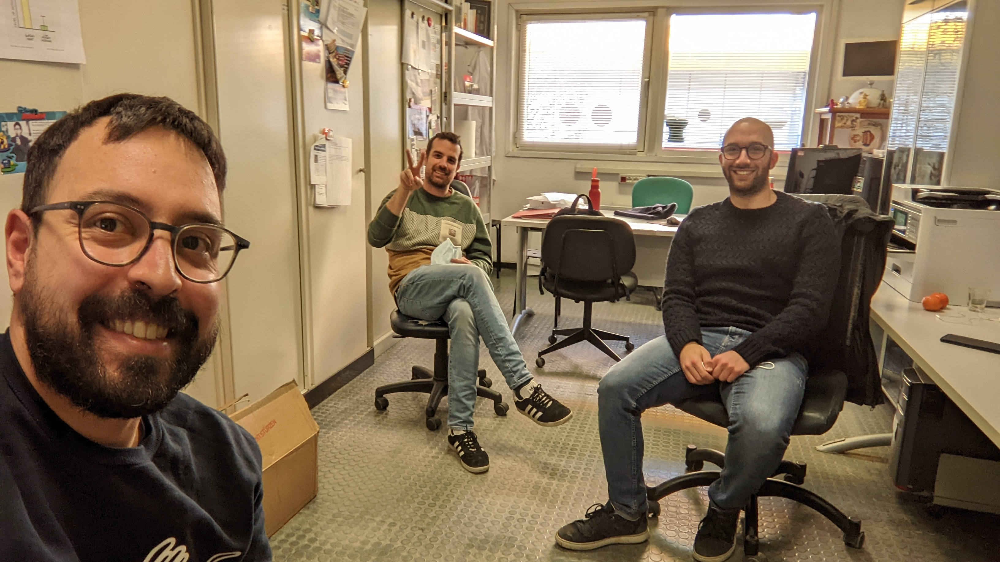
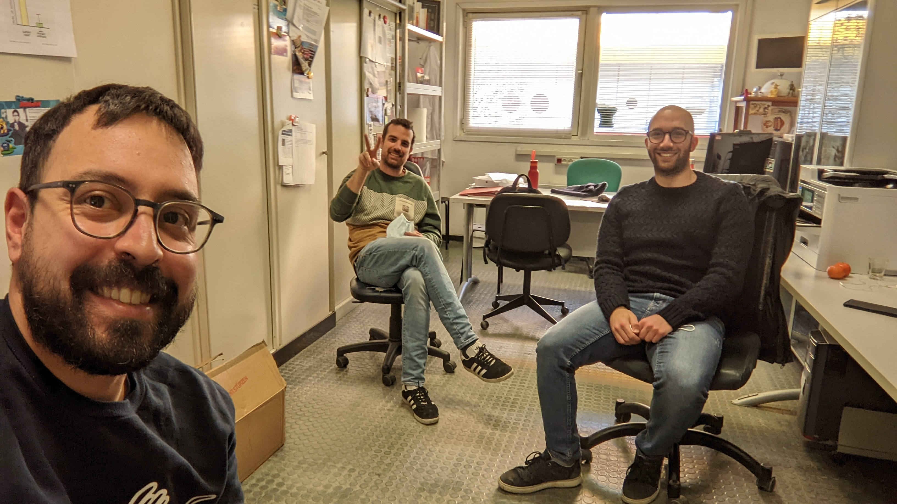

I am a postdoctoral researcher specializing in population genomics, ancient DNA analysis, and human evolution.
My initial research experience in population genetics was gained in the laboratory of Prof. Alessandro Achilli at the University of Perugia (Italy), where I focused on mitochondrial DNA studies in both humans and animals.
During my PhD at the University of Pavia (Italy), I shifted my focus toward the study of autosomal markers, particularly investigating present-day and ancient Indigenous groups from the Americas.
Since 2022, I have been a member of Prof. Emilia Huerta-Sánchez's research group at the Smurfit Institute of Genetics, Trinity College Dublin (Ireland), where we study archaic introgression in ancient genomes.


 
